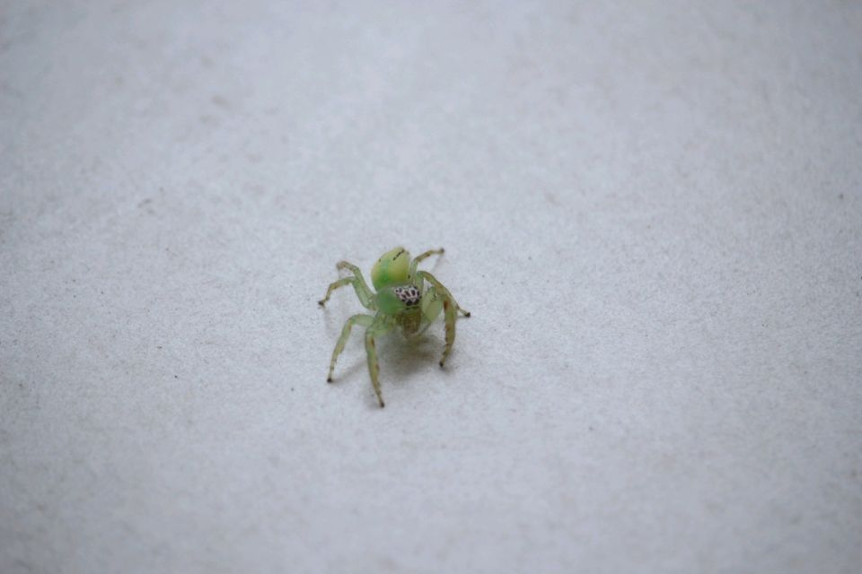
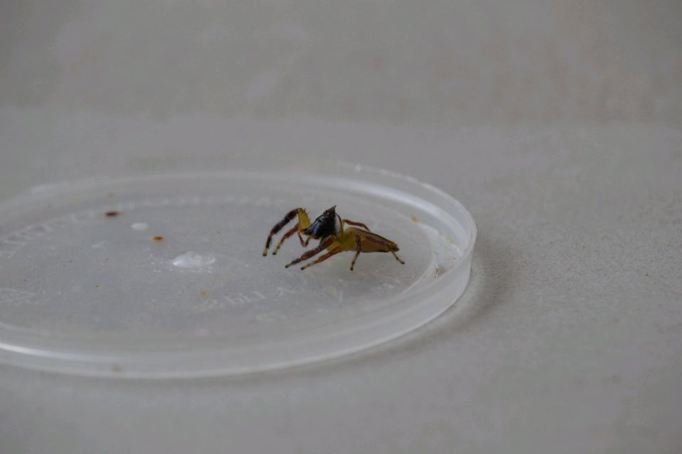

Mopsus mormon（莫氏摩门）澳洲最大的跳蛛，此属目前只有这一种，摩门指的是印度的一种宗教
采集：这种绿跳在北澳的沿海地区真的蛮多的，达尔文和凯恩斯都把它划为常见蜘蛛的一类了，就算是在昆士兰最南部的布里斯班都非常的多，12月中旬去布村时在4个地方采集到不少，唯一的问题是比较难遇到公
感觉这种母绿跳小时候反而更好看，体色是纯粹的鲜嫩绿色，等快成体后腹部的体色会偏黄一些
遇到的最大的一只足展在2cm左右，有资料说这种母跳在18mm到22mm之间，有点好奇极限个体的体型如何hh
个人采集时，只在有水源与热带植物的居民区附近/公园/山上遇到，这类跳蛛应该是有一定的湿度要求
公跳超级像狒狒（是目前我最喜欢的跳蛛，没有之一，超级爱绿色hh）
至于饲养。。。。我采集到的大部分绿跳第二天就扑食了哈哈哈，所以应该还蛮好养的毕竟本身算是常见品种嘛体质肯定很皮实哈哈哈哈
|
母蛛  |
公蛛  |